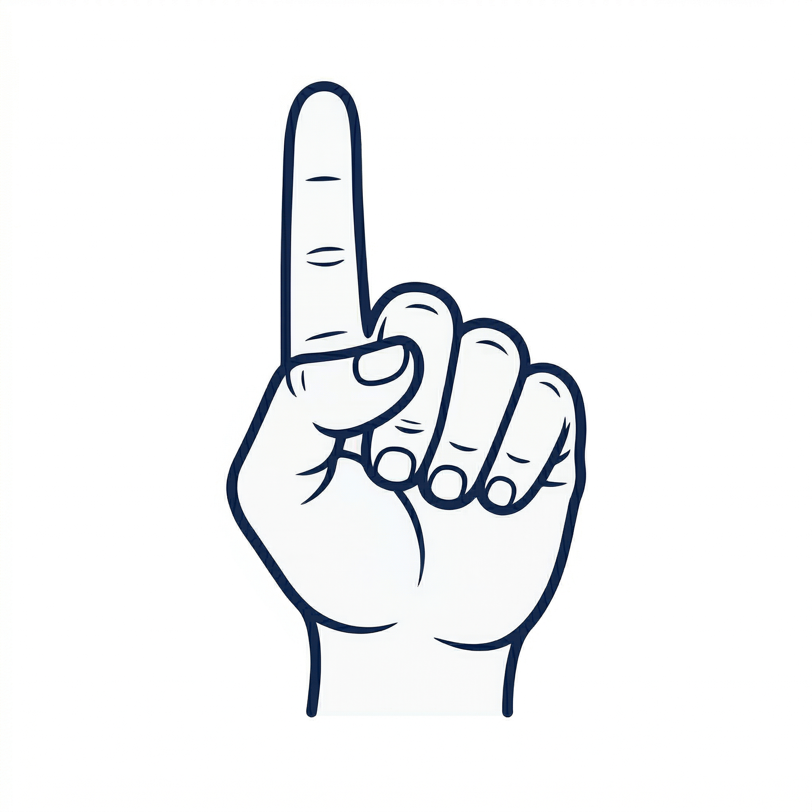
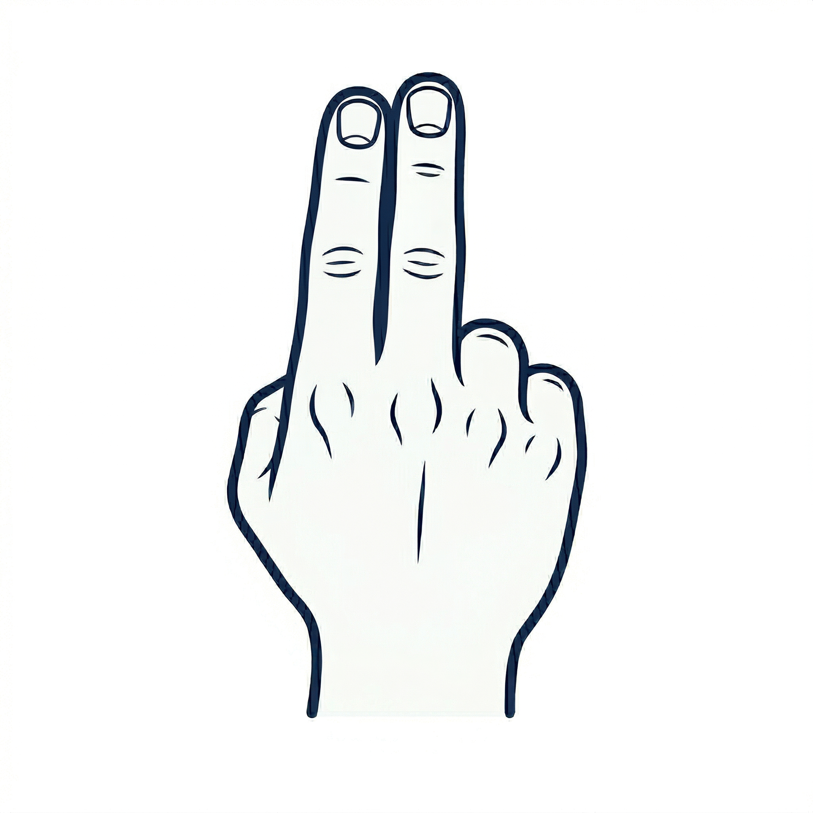
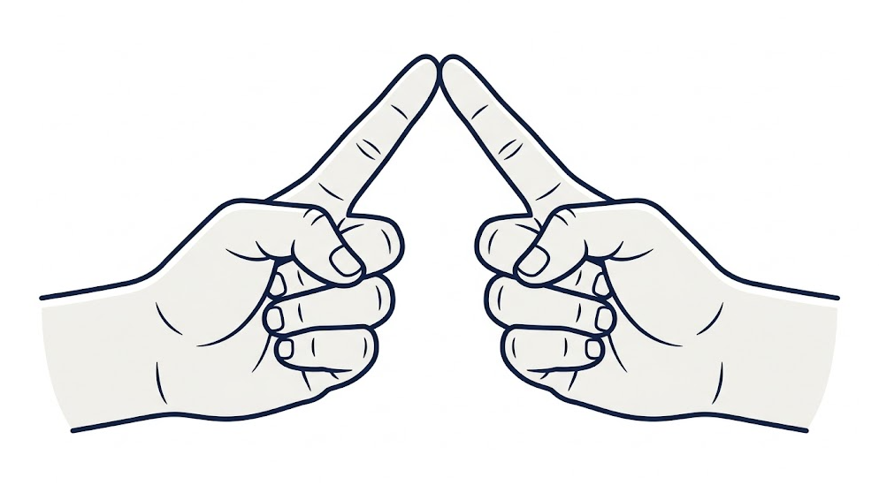
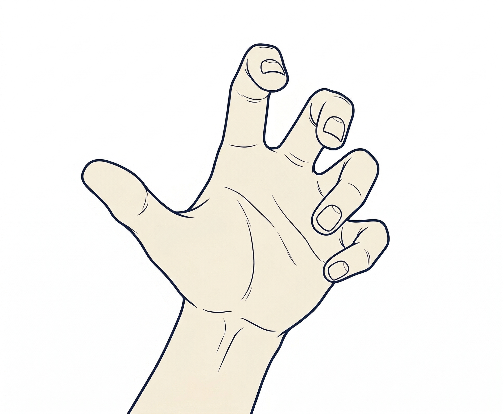
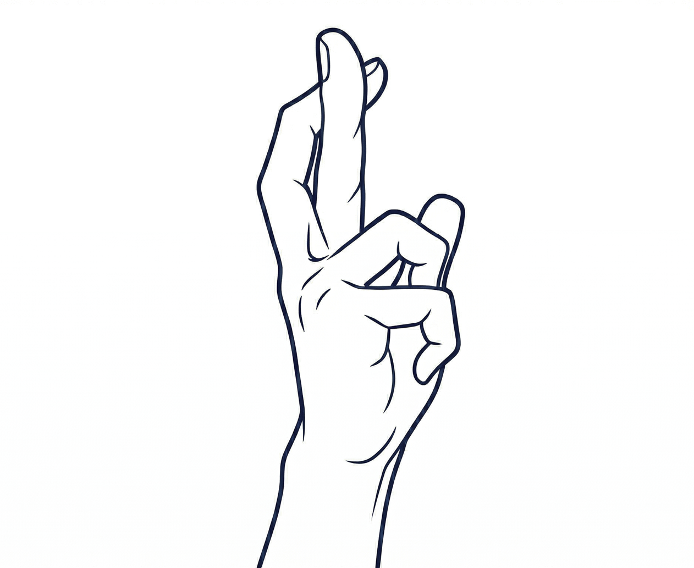

Hand Gesture:
Showing only 1 hand to the web cam. Point your index finger up with the rest of the other fingers clamping together

Hand Gesture:
Show only 1 hand to the web cam. Showing both the index and the middle finger straight up to the top. Make sure the other fingers are clamped together to form a fist

Hand Gesture:
Show 2 hands to the web cam. Using the index finger of both of the hands, touch both of the index fingers. Forming an inverted "V" shape with your hands.

Hand Gesture:
Showing only 1 hand (Right / Left) to the web cam. Keep your hand open and extended forward, with all five fingers spread apart and slightly curved, like a relaxed open palm thrust outward. The palm facing upward, and the wrist is straight in line with the outstretched arm.

Hand Gesture:
Showing only your right hand to the web cam. Straighten your index finger to the top and have your middle finger cross over your index finger. The rest of the fingers should be clamp together forming a fist
Model may not capture your gesture 100% correctly.